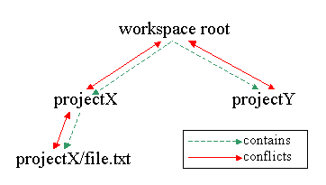
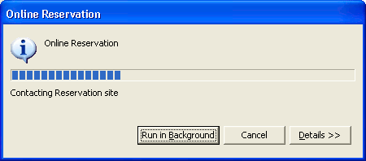
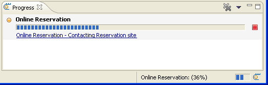
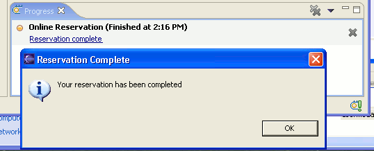

| Eclipse Corner Article |

Summary
This article looks at the new Jobs API available as part of Eclipse 3.0. It describes the main portions of the Jobs API and the use of scheduling rules. It also describes some changes to Eclipse resource management including how the Resources plug-in integrates with the new API. Finally, it describes some new UI functionality that has been added to provide feedback to users about jobs that are run in the background.By Michael Valenta, IBM OTI Labs
September 20, 2004
Before Eclipse 3.0, operations on any resources would lock the entire workspace. At the tail end of this operation, the delta phase occurred and any interested parties could respond to the changes made, including builders, which were given an opportunity to perform incremental builds in response to the changes made by the operation. The advantage of this approach was its simplicity. Clients could write operations and resource delta listeners without worrying about concurrency.
The disadvantage of the pre-3.0 approach was that the user had to wait until an operation completed before the UI became responsive again. The UI still provided the user the ability to cancel the currently running operation but no other work could be done until the operation completed. Some operations were performed in the background (resource decoration and JDT file indexing are two such examples) but these operations were restricted in the sense that they could not modify the workspace. If a background operation did try to modify the workspace, the UI thread would be blocked if the user explicitly performed an operation that modified the workspace and, even worse, the user would not be able to cancel the operation. A further complication with concurrency was that the interaction between the independent locking mechanisms of different plug-ins often resulted in deadlock situations. Because of the independent nature of the locks, there was no way for Eclipse to recover from the deadlock, which forced users to kill the application.
The functionality provided by the workspace locking mechanism can be broken down into the following three aspects:
With the introduction of the Jobs API, these areas have been divided into separate mechanisms and a few additional facilities have been added. The following list summarizes the facilities added.
Job class: support for performing operations or other work
in the background.ISchedulingRule interface: support for determining which jobs
can run concurrently.WorkspaceJob and two IWorkspace#run() methods:
support for batching of delta change notifications.ILock interface: support for deadlock detection and recovery.The rest of this article provides examples of how to use the above-mentioned facilities.
The Job class, provided in the org.eclipse.core.runtime plug-in, allows
clients to easily execute code in a separate thread. This section introduces
the Job class using a series of examples. It focuses on the basic
API for creating and running jobs.
The following code snippet shows a simple example of how to create and run a job.
Job job = new Job("My First Job") {
protected IStatus run(IProgressMonitor monitor) { System.out.println("Hello World (from a background job)"); return Status.OK_STATUS; } }; job.setPriority(Job.SHORT);
job.schedule(); // start as soon as possible
In line  of the
above example, we create an anonymous subclass of Job, providing the job with
a name. All subclasses of
of the
above example, we create an anonymous subclass of Job, providing the job with
a name. All subclasses of Job must provide an implementation of
the run(IProgressMonitor) method as shown in line  .
This method is provided with an
.
This method is provided with an IProgressMonitor instance which
can be used to provide feedback to the user and check for job cancellation.
The priority of a job can be set using one of the priority constants defined
in the Job class. In line ,
we choose the Job.SHORT priority which gives our job a higher priority
than the default (Job.LONG). In line  ,
the job is scheduled to start as soon as possible, which means it will start
once there are no other jobs running that conflict with this job (see Job
Scheduling Rules).
,
the job is scheduled to start as soon as possible, which means it will start
once there are no other jobs running that conflict with this job (see Job
Scheduling Rules).
At first glance, the previous example is not significantly different from using
the Thread class. However, the difference lies in some of the additional
facilities provided by the Job class. This next example illustrates
some of these features by showing how one might define a potentially long-running
job that is scheduled to run every hour and supports cancelation.
final Job job = new Job("Long Running Job") {
protected IStatus run(IProgressMonitor monitor) {
try {
while(hasMoreWorkToDo()) {
// do some work
// ...
if (monitor.isCanceled()) return Status.CANCEL_STATUS;
}
return Status.OK_STATUS;
} finally {
schedule(60000); // start again in an hour
}
}
};
job.addJobChangeListener(new JobChangeAdapter() {
public void done(IJobChangeEvent event) {
if (event.getResult().isOK())
postMessage("Job completed successfully");
else
postError("Job did not complete successfully");
}
});
 job.setSystem(true);
job.schedule(); // start as soon as possible
job.setSystem(true);
job.schedule(); // start as soon as possible
The above job will run until there is no more work to do or until the job is
canceled. Line  shows how a job checks whether a cancel has occurred. The job code is in total
control of whether the job is canceled and when, thus ensuring that job cancelation
does not result in an invalid state. A job is canceled by invoking the
shows how a job checks whether a cancel has occurred. The job code is in total
control of whether the job is canceled and when, thus ensuring that job cancelation
does not result in an invalid state. A job is canceled by invoking the cancel()
method.
job.cancel();
The effect of calling cancel depends on the state of the job.
A job has four states: waiting, sleeping, running, and none. If a job is waiting
or sleeping, then the job will be discarded. If the job is running, it is up
to the Job subclass to check for cancelation, as shown in the above example.
When canceled, the job can either return Status.CANCEL_STATUS,
as shown in the example, or throw an OperationCanceledException,
which will be caught by the job manager and handled properly. The use of an
exception allows cancelation checks to be performed deep within a call stack.
An IJobChangeListener can be added to any job to receive notification
of job state changes. The IJobChangeListener has callbacks for
when a job is scheduled, about to run, running, sleeping, awake, and done. The
IJobChangeEvent is provided in all these cases and contains a reference
to the Job and some callback-specific information. Line  of the previous example shows how to register a listener with the job in order
to receive job state change notification.
of the previous example shows how to register a listener with the job in order
to receive job state change notification. JobChangeAdapter implements
the IJobChangeListener interface providing no-ops for the methods
of the interface. We have overridden the done() method in order
to post a message depending on the result of the job that has just finished.
The status returned by the job's run() method is contained in the
event passed to the done() callback. This result is interrogated
in line and the
result is used to determine what message to display. If all went well, a success
message is posted (line  )
but if there was an error or warning, an error message is posted.
)
but if there was an error or warning, an error message is posted.
There are three categories of jobs: systems, user and default. The distinction
is that system jobs, by default, do not appear in the Progress view (unless
the view is in verbose mode) and do not animate the status line. The job in
the above example has been marked as a system job (line  ).
User jobs and default jobs will show UI affordances when running. In addition,
a user job will show a progress dialog to the user with the option to be run
in the background. More on this will be presented later.
).
User jobs and default jobs will show UI affordances when running. In addition,
a user job will show a progress dialog to the user with the option to be run
in the background. More on this will be presented later.
The following example illustrates how to use job families to control the execution of a set of jobs.
public class FamilyMember extends Job {
private String lastName;
public FamilyMember(String firstName, String lastName) {
super(firstName + " " + lastName);
this.lastName = lastName;
}
protected IStatus run(IProgressMonitor monitor) {
// Take care of family business
return Status.OK_STATUS;
}
public boolean belongsTo(Object family) {
return lastName.equals(family);
}
}
In the above class, each job has a first and last name ( )
and all jobs that have the same last name are considered to be in the same family
(
)
and all jobs that have the same last name are considered to be in the same family
( ).
).
The Eclipse platform provides a job manager that applies several job operations
to an entire family. These operations include cancel, find,
join, sleep, and wakeUp. The following
code snippet illustrates the use of some operations on a family of jobs.
// Create some family members and schedule them
new FamilyMember("Bridget", "Jones).schedule();
new FamilyMember("Tom", "Jones").schedule();
new FamilyMember("Indiana", "Jones").schedule();
// Obtain the Platform job manager
IJobManager manager = Platform.getJobManager();
// put the family to sleep
manager.sleep("Jones");
// put the family to sleep for good!
manager.cancel("Jones");
This section has introduced the basic Jobs API. The next section will look at how to prevent jobs that operate on the same resources from interfering with each other.
An important aspect of managing concurrently running jobs is providing a means to ensure that multiple threads can safely access shared resources. This is typically done by providing a means for a job to acquire a lock on a particular resource while it is accessing it. Locking gives rise to the possibility of deadlock, which is a situation where multiple threads are contending for multiple resources in such a way that none of the threads can complete their work because of locks held by other threads. The following diagram illustrates the simplest form of deadlock.
In this scenario, we assume that both threads need to hold both locks to do some work and will release them when the work is done. However, they both obtain the locks in a different order which can lead to deadlock. Thread 1 obtains lock A while, at approximately the same time, thread 2 obtains lock B. Before either lock is released, both threads try to obtain the other's lock. This results in both threads being blocked indefinitely since neither can continue until the other releases the held lock but neither will release a lock until the second lock is obtained.
The ISchedulingRule interface, provided as part of the Jobs API,
allows clients to define locks that can be used to ensure exclusive access to
resources when required while preventing deadlock from occurring in the situation
where multiple running jobs try to access the same resources. A scheduling rule
can be assigned to a job before it is scheduled. This allows the job manager
to ensure that the required resources are available before starting the job.
ISchedulingRule myRule = ...
job.setSchedulingRule(myRule);
In order to avoid resource contention and deadlock, there are two constraints associated with scheduling rules:
The implementation of the ISchedulingRule interface reflects these
rules.
public interface ISchedulingRule {
public boolean isConflicting(ISchedulingRule rule);
public boolean contains(ISchedulingRule rule);
}
The first constraint is fairly self explanatory and is provided through the
implementation of isConflicting(). The second indicates the fact
that a scheduling rule can be a combination of multiple rules. There are two
ways to combine scheduling rules. One is to use a MultiRule to
contain two or more child rules. The other is for the implementer of the scheduling
rules to implement a containment relationship between scheduling rules using
the contains() method. The rest of this section contains examples
that illustrate these points.
 This API does not make deadlock
impossible. However, when deadlock occurs between the locking mechanisms provided
by this API, a built-in deadlock detection facility will at least allow execution
of the threads involved to continue (more on this later). Of course, deadlocks
that involve other locking mechanisms will not be detected or resolved.
This API does not make deadlock
impossible. However, when deadlock occurs between the locking mechanisms provided
by this API, a built-in deadlock detection facility will at least allow execution
of the threads involved to continue (more on this later). Of course, deadlocks
that involve other locking mechanisms will not be detected or resolved.
The org.eclipse.core.resources plug-in implements the ISchedulingRule
mechanism by making all resource handles scheduling rules as well. That is to
say that the IResource interface extends ISchedulingRule.
The following example illustrates how to create a job that modifies one or more
files in a project.
final IProject project =
ResourcesPlugin.getWorkspace().getRoot().getProject("MyProject");
Job job = new Job("Make Files") {
public IStatus run(IProgressMonitor monitor) {
try {
monitor.beginTask("Create some files", 100);
for (int i=0; i<10; i++) {
project.getFile("file" + i).create(
new ByteArrayInputStream(("This is file " + i).getBytes()),
false /* force */, new SubProgressMonitor(monitor, 10));
if (monitor.isCanceled()) return Status.CANCEL_STATUS;
}
} catch(CoreException e) {
return e.getStatus();
} finally {
monitor.done();
}
return Status.OK_STATUS;
}
};
job.setRule(ResourcesPlugin.getWorkspace().getRoot());
job.schedule();
The above code reserves exclusive write access to the resources contained in
the workspace by associating a scheduling rule with the job (line )
. The job will not be run while other threads hold a conflicting rule. The
)
. The job will not be run while other threads hold a conflicting rule. The isConflicting()
method of IResource is implemented in such a way that a resource
rule conflicts with the resource itself and any ancestor or descendant of the
rule. This is illustrated by the following diagram.

Given this relationship, our job will not run if a scheduling rule is held by another thread for the workspace root itself or for any of the resources contained in the workspace. Once this job is running, no other threads will be able to obtain a rule for the above-mentioned resources until the job in our example completes.
The problem with our previous example is that it locks the entire workspace
while only touching files in a single project. This means that no other code,
job or otherwise, that modifies any resource in the workspace can run concurrently
with our job. To correct this, we could either provide a more specific scheduling
rule (i.e. lock only what we need) or not provide a scheduling rule for the
job at all. We can get away with the latter approach because the IFile#create()
method obtains a scheduling rule itself before creating the file. The IFile
create method would look something like this:
public void create(InputStream in, boolean force, IProgressMonitor pm) {
IResourceRuleFactory ruleFactory =
ResourcesPlugin.getWorkspace().getRuleFactory();
ISchedulingRule rule = ruleFactory.createRule(this);
try {
Platform.getJobManager().beginRule(rule, pm);
// create the file
} finally {
Platform.getJobManager().endRule(rule);
}
}
Notice that the determination of the scheduling rule is delegated to a rule
factory ()
obtained from the workspace. This rule factory is used by the resources plug-in,
and should be used by clients of IResource as well, in order to
determine what rule to use when performing operations on a resource. The rule
factory has methods for determining the rules for several different workspace
modifications (resource creation, deletion, moves, copies, etc.). We won't go
into the details of how these rules are determined, but clients should not make
any assumptions about what rules are used for what operations; instead they
should always query the rule factory. The rules can change depending on what
resource is being modified or what project the resources are in (what repository
the project is shared with, for instance).
In the create method, we obtain the creation rule for the file.
The rule will either be the file itself (since resources are also scheduling
rules), an ancestor of the file (i.e. parent folder, project or even possibly
the workspace root), or a combination of rules (using MultiRule)
that includes the file.
Once we have the rule we need, we can use the IJobManager API
to obtain and release the rule. The code in line  ensures that either this thread already has a scheduling rule that matches or
contains the file rule or, if no scheduling rule is held by the thread, that
no other thread has obtained a rule that conflicts with the file rule. Once
this rule is obtained it will prevent other threads from obtaining a conflicting
rule. Other threads are prevented from obtaining conflicting rules until the
rule is released in line
ensures that either this thread already has a scheduling rule that matches or
contains the file rule or, if no scheduling rule is held by the thread, that
no other thread has obtained a rule that conflicts with the file rule. Once
this rule is obtained it will prevent other threads from obtaining a conflicting
rule. Other threads are prevented from obtaining conflicting rules until the
rule is released in line  .
To state this in terms of the resource API, our create method will block on
line
.
To state this in terms of the resource API, our create method will block on
line  until no other
thread holds a scheduling rule on our file or any of its ancestor folders. Then,
once our job is allowed to continue, any other thread that tries to obtain a
lock on our file or any of its ancestor folders will block until line
until no other
thread holds a scheduling rule on our file or any of its ancestor folders. Then,
once our job is allowed to continue, any other thread that tries to obtain a
lock on our file or any of its ancestor folders will block until line  is executed.
is executed.
When using the beginRule/endRule API, it is important to always
match a call to beginRule() with a corresponding call to endRule()
using the identical rule (i.e., endRule() uses the identity check,
==, not the equality check, equals()) in the form
shown above (i.e., the beginRule must be inside the try
block). The reason is that, if the user cancels the job while the code is in
the beginRule, the endRule must still be invoked.
It is worth reiterating at this point that the thread that is calling the create
method must either not hold any scheduling rules or must hold a rule that encompasses
the rule required by the file creation. If this is not the case, the the call
to beginRule will fail with a runtime exception. An encompassing
rule can be any of the ancestors of the creation rule obtained from the rule
factory or it can be a multi-rule which is presented in the next section.
One of the restrictions of scheduling rules is that, if a running job holds a scheduling rule, it can only try to obtain new rules that are contained by the held rule. In other words, the outer-most scheduling rule obtained by a job must encompass all nested rules. In the previous example, we obtained the workspace root resource which encompasses all resources in the workspace. This works but, as we said before, it prevents any other jobs from modifying resources while our job is running.
The implication of the implementation of the create method in
our previous example is that we have options as to what rule we assign to our
job (as shown in line  of our job example).
of our job example).
job.setRule(null)). This means that
the rules for each file creation will be obtained one by one. For each file
we try to create, the create method will obtain the required
rule, so we will still have exclusive access to the resource (or block until
we get it). This will provide the maximum level of concurrency but the disadvantage
is that our operation may not be atomic in the sense that other threads could
modify the same files while the job is running but is not operating on that
specific file. Another disadvantage is that there is overhead when a thread
that does not hold a scheduling rule obtains one. There is also overhead associated
with a running job that is blocked, as opposed to a job that hasn't started
yet because of a scheduling rule conflict. Although this overhead is generally
not a concern, it may be for some situations.Here is a method that defines a multi-rule that can be used to create multiple files.
public ISchedulingRule createRule(IFile[] files) {
ISchedulingRule combinedRule = null;
IResourceRuleFactory ruleFactory =
ResourcesPlugin.getWorkspace().getRuleFactory();
for (int i = 0; i < files.length; i++) {
ISchedulingRule rule = ruleFactory.createRule(files[i]);
combinedRule = MultiRule.combine(rule, combinedRule);
}
return combinedRule;
}
For each file, we obtain the creation rule from the rule factory ( ).
We combine the rules using a static helper on the
).
We combine the rules using a static helper on the MultiRule class
( ). The
). The combine
method will combine the rules in the most compact and specific form possible
while ensuring that the rule that is returned encompasses the rules being combined.
We could then change line  of our previous example to the following line:
of our previous example to the following line:
job.setRule(createRule(files));
The job now will not run until the files are available and, once running, will only block other jobs that try to obtain rules on those specific files.
 Although recommended whenever
possible, it is not required that a job pre-define its scheduling rule. As stated
previously, scheduling rules can be obtained within a running job using
Although recommended whenever
possible, it is not required that a job pre-define its scheduling rule. As stated
previously, scheduling rules can be obtained within a running job using IJobManager#beginRule().
So, for instance, if you have a job that operates on a large set of resources,
you may want to obtain scheduling rules for sub-operations of the operation
instead of the complete operation. However, there is overhead associated with
obtaining a topmost scheduling rule so you may not want to obtain scheduling
rules at the file level. A good rule of thumb when performing an operation on
resources that span multiple projects is to divide the resources by project
and obtain the required scheduling rules one project at a time. This is what
the CVS plug-in does when performing operations on multiple projects.
Read access to resources does not require a scheduling rule. One implication of this is that information about resources, including the contents of files, can be accessed without blocking other threads that are modifying those resources. Another implication is that, when accessing resources in the workspace in a read-only fashion without holding a scheduling rule, the client must be aware that pre-checks cannot be used to guarantee the state of a resource at any future point. The following example illustrates this.
IFile file = // some file
try {
// Do something with the file contents
}
} catch (CoreException e) {
if (e.getStatus().getCode() == IResourceStatus.RESOURCE_NOT_FOUND) {
// Resource no longer exists. Deal with it
} else {
handleError(e);
}
}
In line  , we check
whether a file exists before accessing its contents. However, the file could
be deleted by another thread after line
, we check
whether a file exists before accessing its contents. However, the file could
be deleted by another thread after line  is executed but before line
is executed but before line  is. This will result in an exception. To make our code thread-safe, we add the
existence check in line
that allows us to verify, after the fact, that the file we cared about has been
deleted. We can then do whatever we would have done for the file if the existence
check in line
is. This will result in an exception. To make our code thread-safe, we add the
existence check in line
that allows us to verify, after the fact, that the file we cared about has been
deleted. We can then do whatever we would have done for the file if the existence
check in line  had
failed.
had
failed.
 Although the resource rule
factory does have a method for obtaining a marker creation rule, creating a
marker does not currently require a scheduling rule. This allows marker creation
to be done in the background without affecting other threads that are modifying
resources. Clients should still obtain the rule from the rule factory, because
it is possible that marker creation could require a rule in the future.
Although the resource rule
factory does have a method for obtaining a marker creation rule, creating a
marker does not currently require a scheduling rule. This allows marker creation
to be done in the background without affecting other threads that are modifying
resources. Clients should still obtain the rule from the rule factory, because
it is possible that marker creation could require a rule in the future.
 There is a bit of a caveat
when reading and writing files concurrently, at least on Linux and Windows.
If one thread writes to a file as another is reading, it is possible that the
reading thread could start reading the new contents. This is not very likely
to happen unless a thread blocks while reading a file since the reading thread
will most likely use buffering and will be able to keep ahead of the writing
thread. However, if your application must ensure that the contents read from
a file are consistent, then some mechanism, be it the use of scheduling rules
or some other mechanism, should be used.
There is a bit of a caveat
when reading and writing files concurrently, at least on Linux and Windows.
If one thread writes to a file as another is reading, it is possible that the
reading thread could start reading the new contents. This is not very likely
to happen unless a thread blocks while reading a file since the reading thread
will most likely use buffering and will be able to keep ahead of the writing
thread. However, if your application must ensure that the contents read from
a file are consistent, then some mechanism, be it the use of scheduling rules
or some other mechanism, should be used.
 On windows, the deletion
of a file will fail if another thread is reading the contents of the file. Again,
this can be handled by using scheduling rules when reading but can also be handled
by catching the deletion failure and notifying the user. The latter approach
is what is used by the Windows file explorer.
On windows, the deletion
of a file will fail if another thread is reading the contents of the file. Again,
this can be handled by using scheduling rules when reading but can also be handled
by catching the deletion failure and notifying the user. The latter approach
is what is used by the Windows file explorer.
The old IWorkspace#run(IWorkspaceRunnable) method was used to
batch deltas and prevent auto-builds from running until the outermost run
method completed. With the introduction of the Jobs API, this is still the case,
to a certain degree, but with the following changes:
POST_CHANGE deltas may be fired at intervals while within an
IWorkspaceRunnable in order to ensure responsiveness of the UI.
Previously, deltas were only fired when the runnable completed execution.The following table provides the API class or method to use depending on whether the user requires delta batching or concurrency.
| Delta batching | No batching | |
| Separate Thread (background) | WorkspaceJob | Job |
| Same thread | IWorkspace.run() | - |
If delta batching is desired and the work is to be done in the same thread,
then IWorkspace.run() is used as before. However, now there are
two run() methods on IWorkspace:
Notice that the second method ( which is new in 3.0) takes an additional
which is new in 3.0) takes an additional ISchedulingRule parameter.
It is better to use this new API and identify a scheduling rule that encompasses
only those resources that will be modified inside the IWorkspaceRunnable.
If it is not known ahead of time which resources will be modified, null
can be passed as an argument and the scheduling rules can then be obtained inside
the IWorkspaceRunnable. If an appropriate encompassing rule cannot
be defined ahead of time, using null as the rule of a runnable
is often preferable to using the old run method ( )
because this method locks the entire workspace while the
)
because this method locks the entire workspace while the IWorkspaceRunnable
is run. The use of the old run method can easily cause the UI to
become unresponsive because the invoking thread will block while any other thread
holds an IResource scheduling rule. The user will be presented
with a progress dialog but will still need to wait for the operation to complete
before doing anything else.
 In most cases, the firing
of post-change deltas from within a workspace operation is not a problem. However,
it will affect those who depended on these happening only at the end of an operation.
For these cases, the new run method also takes an
In most cases, the firing
of post-change deltas from within a workspace operation is not a problem. However,
it will affect those who depended on these happening only at the end of an operation.
For these cases, the new run method also takes an int flag which,
when set to IWorkspace.AVOID_UPDATE; this will prevent deltas from
occurring while inside the operation.
The following example modifies the contents of the selected files.
final IFile[] files = getSelectedFiles();
public void run(IProgressMonitor monitor) throws CoreException {
for (int i = 0; i < files.length; i++) {
files[i].setContents(modifyContents(files[i].getContents()), false, true, monitor);
}
}
In earlier versions of Eclipse, this code, although not perfect, was acceptable; there are now problems with this code, however.
run method obtains a lock on the workspace root
resource. This will block our task in the above code until any other tasks
that are modifying workspace resources complete and will then block any future
tasks that try to modify resources until our task completes.null progress monitor, which does not allow a user to cancel
the operation should it be waiting too long. The Workbench will still present
a dialog to the user if our task is blocked, but it will not show progress.Now we are going to convert the above example to use the new run
method. First, let's look at how we can provide a more specific scheduling rule.
The easiest approach would be to pass null. This will work because
each file modification (
in the above example) obtains the proper scheduling rule on the individual resource.
However, we may want to ensure that another thread does not modify any of the
files we ae operating on until we are done. The following method combines the
rules required to modify each file into a single scheduling rule that will ensure
that no one else can modify our files until we release the rule.
public ISchedulingRule modifyRule(IFile[] files) {
ISchedulingRule combinedRule = null;
IResourceRuleFactory ruleFactory =
ResourcesPlugin.getWorkspace().getRuleFactory();
for (int i = 0; i < files.length; i++) {
ISchedulingRule rule = ruleFactory.modifyRule(files[i]);
combinedRule = MultiRule.combine(rule, combinedRule);
}
return combinedRule;
}
This code is the same as the createRule in the previous section
except that it uses the modifyRule of the rule factory instead
(line  ). The code
from our previous example then becomes the following code, the only difference
being line
). The code
from our previous example then becomes the following code, the only difference
being line  where
a scheduling rule is provided to the
where
a scheduling rule is provided to the run method.
final IFile[] files = getSelectedFiles();
ResourcesPlugin.getWorkspace().run(new IWorkspaceRunnable() {
public void run(IProgressMonitor monitor) throws CoreException {
for (int i = 0; i < files.length; i++) {
files[i].setContents(modifyContents(files[i].getContents()),
false, true, monitor);
}
}
}, modifyRule(files), IResource.NONE, monitor);
In the previous example, we illustrated how to use the new IWorkspace.run
method to obtain a scheduling rule on the resources being modified. Any time
a scheduling rule is acquired, execution of that thread might be blocked until
the rule can be obtained. In situations like these, the user would benefit from
seeing a dialog that shows the progress for the running task and provides feedback
if the task is blocked by some other task. The easiest way to do this is to
use the progress service provided by the org.eclipse.ui.workbench plug-in:
// Create a runnable that can be passed to the progress service
final IFile[] files = getSelectedFiles();WorkspaceModifyOperation op = new WorkspaceModifyOperation(modifyRule(files)) {
protected void execute(IProgressMonitor monitor) throws CoreException {
for (int i = 0; i < files.length; i++) {
files[i].setContents(modifyContents(files[i].getContents()), false, true, monitor);
}
};
};
// Use the progess service to execute the runnable
IProgressService service = PlatformUI.getWorkbench().getProgressService();
try {service.run(true, true, op);
} catch (InvocationTargetException e) {
// Operation was canceled
} catch (InterruptedException e) {
// Handle the wrapped exception
}
The above code creates a WorkspaceModifyOperation (line  )
instead of an
)
instead of an IWorkspaceRunnable, The WorkspaceModifyOperation
is a helper class provided by the org.eclipse.ui.workbench.ide plug-in
that can be used to convert code that appears in an IWorkspaceRunnable
(as in our previous two examples) into a form that can be used by the progress
service (i.e., an instance of IRunnableWithProgress). Take note
that, in this new example, we provided an execute method instead
of a run method, and that the WorkspaceModifyOperation
takes a scheduling rule as an argument in its constructor. Once we have our
operation, we run it using the progress service (line  ),
indicating that the execution of the runnable should be forked and that cancelation
should be allowed (indicated by the two
),
indicating that the execution of the runnable should be forked and that cancelation
should be allowed (indicated by the two boolean parameters to the
progress service run method).
The advantage of using the progress service is that it will show a progress dialog that will give the user feedback about jobs that may be blocking this one and allow the user to cancel if the operation is taking too long. There are, however, factors we must be aware of with this code.
syncExec() or asyncExec() or an
invalid thread access exception will be thrown by SWT. In our example, there
is no code that modifies the UI so we are OK. There is also a runInUI
method on IProgressService, which should be considered when writing
code that updates the UI. Also, another option to consider is the use of WorkbenchJob
which is a job that runs in the UI thread.This second point is addressed by the next example.
Another way to batch resource change notifications is to use a WorkspaceJob.
The code to do what we did in the previous example using a WorkspaceJob
would look like this.
final IFile[] files = getSelectedFiles();
WorkspaceJob job = new WorkspaceJob("Modify some files") {
public IStatus runInWorkspace(IProgressMonitor monitor)
throws CoreException {
for (int i = 0; i < files.length; i++) {
files[i].setContents(modifyContents(files[i].getContents()),
false, true, monitor);
}
return Status.OK_STATUS;
}
};
job.setRule(modifyRule(files));
job.schedule();
The behavior of this job is similar to that of the IWorkspace.run
methods in the sense that resource change notifications will be batched. The
advantage of using a job is that it can be run in the background, thus allowing
the user to perform other tasks. The disadvantage is that providing feedback
to the user is more complicated than just throwing up a progress dialog. The
next section will address the issue of providing feedback to the user about
background tasks.
Although it is a good thing that jobs can be run in the background, it can
be confusing when jobs that are launched as a direct result of user action just
run in the background. When this happens, the user is not sure whether something
is happening or if the action failed. One way of dealing with this is by showing
progress in the Workbench progress area in the lower right corner of the Workbench
window. Progress is shown in the progress area for any job that is a non-system
job. By default, jobs are non-system jobs so this feedback will happen unless
the job is explicitly marked as a system job (using setSystem).
Showing progress in the progress area can still be too subtle for most users. In many cases, the user would like stronger feedback about the job's start and completion. The former indication can be provided by tagging the job as a user job.
Job job = new Job("Use initiated job") {
protected IStatus run(IProgressMonitor monitor) {
// So some work
return Status.OK_STATUS;
}
};
job.setUser(true);
job.schedule();
In line  , the job
has been identified as a user job. What this means is that the user will be
shown a progress dialog but will be given the option to run the job in the background
by clicking a button in the dialog. This was done to keep the user experience
close to what it was pre-3.0 but still allow the user to benefit from background
tasks. There is a Workbench option, "Always run in background", that
can be enabled if a user does not want to see the progress dialog.
, the job
has been identified as a user job. What this means is that the user will be
shown a progress dialog but will be given the option to run the job in the background
by clicking a button in the dialog. This was done to keep the user experience
close to what it was pre-3.0 but still allow the user to benefit from background
tasks. There is a Workbench option, "Always run in background", that
can be enabled if a user does not want to see the progress dialog.

If the user does not choose to run the job in the background, then they will know when the job has completed because the progress dialog will close. However, if they choose to run the job in the background (by using the dialog button or the preference), they will not know when the job has completed. Furthermore, a running job may accumulate information that should be displayed to the user when the job completes. This can be shown to the user immediately if the job is modal (i.e., the job was not run in the background). However, if the job was run in the background, the information should not be displayed immediately because it may interrupt what the user is currently doing. In these cases, an indication is placed on the far-right side of the Workbench progress area, which indicates that the job is done and has results for the user to view. Clicking on the indicator will display the result. Such a job will also leave an entry in the progress view, which can be opened by double-clicking in the progress area. Clicking on the link in the progress view will also open the result.

Now let's have a look at how we can configure a job to give us this behavior.
Job job = new Job("Online Reservation") {
protected IStatus run(IProgressMonitor monitor) {
// Make a reservation
// ...
setProperty(IProgressConstants.ICON_PROPERTY, getImage());
if (isModal(this)) {
// The progress dialog is still open so
// just open the message
showResults();
} else {
setProperty(IProgressConstants.KEEP_PROPERTY, Boolean.TRUE);
setProperty(IProgressConstants.ACTION_PROPERTY,
getReservationCompletedAction());
}
return Status.OK_STATUS;
}
};
job.setUser(true);
job.schedule();
Let's assume that the purpose of the above job is to make a reservation for
the user in the background. The user may decide to wait while the reservation
is being made or decide to run it in the background. When the job completes
the reservation, it checks to see what the user chose to do (line  ).
The
).
The isModal(Job) method is implemented as follows:
public boolean isModal(Job job) {
Boolean isModal = (Boolean)job.getProperty(
IProgressConstants.PROPERTY_IN_DIALOG);
if(isModal == null) return false;
return isModal.booleanValue();
}
This method checks the IProgressConstants.PROPERTY_IN_DIALOG to
see if the job is being run in a dialog. Basically, if the property exists and
is the Boolean value true, then the user decided to
wait for the results. The results can be shown immediately to the user (by invoking
showResults).
However, if the user chose to run the job in the background, we want to configure
the job so that the user is given the indication that the job has completed.
This is done in line  by setting the
by setting the KEEP property of the job. This causes the job to
remain in the progress view so the results can be accessible to the user. In
line , we associate
an action with the job. This will cause a link to be added to the progress view
and the progress status area. When the user clicks on the link, they will see
the results. The action for the job could look something like this.
protected Action getReservationCompletedAction() {
return new Action("View reservation status") {
public void run() {
MessageDialog.openInformation(getShell(),
"Reservation Complete",
"Your reservation has been completed");
}
};
}
When the user clicks on the results link, the action is run, resulting in the following dialog.

It is worthwhile to look at the showResults method that we invoked
in the modal case.
protected static void showResults() {
Display.getDefault().asyncExec(new Runnable() {
public void run() {
getReservationCompletedAction().run();
}
});
}
In this case, we run the same action but we do it using an asyncExec
since the job will not be running in the UI thread.
 There are a few other useful
There are a few other useful
IProgressConstants job properties. Our example also showed the
use of the IMAGE constant which is used to customize the image
that appears in the progress view. There is also a KEEPONE property
that is like the KEEP property but will ensure that only one job
from a given family is kept in the progress view.
 It is possible that multiple
jobs are part of the same logical task. In these cases, the jobs can be grouped
in a single entry in the progress view using a progress group. Grouping is accomplished
using the
It is possible that multiple
jobs are part of the same logical task. In these cases, the jobs can be grouped
in a single entry in the progress view using a progress group. Grouping is accomplished
using the setProgressGroup method of Job.
The scheduling rules presented so far are helpful for ensuring exclusive access to resources in an Eclipse workspace. But what about ensuring the thread safety of other data structures. When a data structure is being accessed by multiple threads concurrently, there is a possibility that the two threads will interfere in such a way that will cause the data structure involved to become corrupt. We are not going to go into the details of how this could happen but instead leave that to the many books already published on that subject. We will, however, present one of the mechanisms that Eclipse provides to help in this situation.
Ensuring the integrity of internal data structures is the responsibility of the plug-in that maintains the data. In cases where there is no interaction between plug-ins, the facilities provided by Java™ (synchronized blocks and Object monitors) may be adequate. However, the use of these facilities can easily lead to deadlock in cases where there is interaction between multiple plug-ins that use locking of some kind to ensure the thread-safety of their data.
The org.eclispe.core.runtime plug-in provides a lock implementation that can be used to ensure data structure integrity. An instance of a lock can be obtained in the following way.
private static ILock lock = Platform.getJobManager().newLock();
Once you have a lock, each uninterruptible data structure access can be wrapped in the following way to ensure that no two threads are in a critical section at the same time.
try {
lock.acquire();
// Access or modify data structure
} finally {
lock.release();
}
A call to the acquire method of a lock will block if any other
thread has already acquired the lock but has not released it. The acquire method
will succeed if the lock is already held by the thread executing the call or
if the lock is not held. It is important to use a try/finally block
in the way shown above to ensure that locks that are acquired by a thread are
released.
 There is also an
There is also an acquire
method that takes a parameter that indicates how long to wait to acquire the
lock before timing out.
The advantage of using the locking mechanism provided by the Runtime plug-in is that it has deadlock detection and recovery with other locks and scheduling rules. This means that, in those cases where deadlock occurs, the system will recover. This is better than the alternative, which is to have a frozen application that must be killed and restarted. However, it is not ideal as the deadlock is handled by relinquishing the locks held by one of the offending threads until the other offender has completed, at which time the former thread will be allowed to continue. In many cases, this will not cause a problem but there is a possibility of data structures being corrupted. Observing the following two rules will help reduce the risk of deadlock.
 Always obtain locks in the
same order. For example, obtain scheduling rules before obtaining internal locks.
Always obtain locks in the
same order. For example, obtain scheduling rules before obtaining internal locks.
 Don't call client code when
you hold a lock, whether it be a scheduling rule, an ordered lock, a synchronized
block or any other locking mechanism. The only exception to this rule is when
the client is made aware of the locks that are held. For instance, during a
post change delta, the workspace lock is held. It is up to the client who implements
a delta handler to ensure that they do not obtain any locks out of order.
Don't call client code when
you hold a lock, whether it be a scheduling rule, an ordered lock, a synchronized
block or any other locking mechanism. The only exception to this rule is when
the client is made aware of the locks that are held. For instance, during a
post change delta, the workspace lock is held. It is up to the client who implements
a delta handler to ensure that they do not obtain any locks out of order.
Another main feature of ILock is the interaction with Display#syncExec().
If the UI thread is blocked on an ILock#acquire(), it will still
execute syncExecs from other threads that own locks. This avoids
a common deadlock scenario when multiple threads are trying to update UI.
In this article, we have introduced the Eclipse 3.0 Jobs API. Jobs provide an infrastructure for doing work in the background. Jobs can be scheduled to run immediately or after an elapsed time and give notifications of changes in state (i.e., from scheduled to running to done, etc.). They can also be grouped into families in order to perform operations on a group of jobs (e.g., cancel).
Included in the Job infrastructure is the concept of scheduling rules which
are used to handle multiple jobs that contend for the same resources. Multiple
jobs that have conflicting scheduling rules cannot be run concurrently. Scheduling
rules can be combined using a MultiRule so that the requirements
of a job can be stated in advance. Rules can also be arranged hierarchically
in the sense that obtaining a parent rule will give a job access to all contained
rules.
The Eclipse file-system resources are scheduling rules, which allows them to be used with the Jobs API to schedule jobs that modify file-system resources. Rules are only required when modifying resources. Another change to Eclipse resource management is in how resource deltas are handled. Deltas are fired periodically in order to allow for a responsive user interface. Along those same lines, jobs have been given several properties that are used to configure how feedback of job progress and completion is shown to the user.
You should check out the org.eclipse.ui.examples.jobs plug-in from the /cvsroot/eclipse repository on dev.eclipse.org (:pserver:anonymous@dev.eclipse.org:/cvsroot/eclipse). It has examples of all the things included in this article. Once you have the examples loaded, you can experiment with various settings using the Job Factory view (which can be opened using Show View>Other from the main menu and selecting Progress Example>Job Factory).
Concurrent Programming in Java, Doug Lea: http://java.sun.com/docs/books/cp/
Eclipse 3.0 Documentation on the Eclipse Concurrency Infrastructure
Eclipse 3.0 Documentation the Eclipse Workbench Concurrency Support
Java and all Java-based trademarks and logos are trademarks of Sun Microsystems, Inc. in the United States, other countries, or both.
Other company, product, and service names may be trademarks or service marks of others.